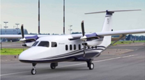
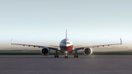
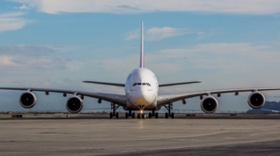

When the Wright brothers first took to flight on December 17, 1903, it was the beginning of a new era for mankind (click here for more information) Transportation would become revolutionized in the coming century and the world would become more interconnected than ever before. With the advent of flight, it no longer took days or weeks or months to travel across the United States, the continent, and eventually the world. Today, a person or package can travel the world in a span of hours. All of this would not be possible without two key aspects, airplanes and airports.
When the Wright brothers took flight, they were able to travel only 852 feet in 59 seconds before landing again. Today, aircraft are able to stay in the air for hours and fly thousands of miles without refueling. This is due to the constant evolution of technology and engineering of airplanes. Airplanes have become a staple for moving people and packages across the world. There are many types of aircraft and can be classified by their engine type:
| Type of Aircraft | Pros | Cons | Example Picture |
| Propeller - Uses turboprop propellers to move the aircraft forward | More efficient than jet engines, Shorter runways | Slower, Cannot fly very high |  |
| Twin engine - airplane that has two jet engines | Long range, more fuel efficient that 4 engine jets | Smaller capacities |  |
| Quad engine - airplanes that has four jet engines | Larger capacity, holds more cargo | Less fuel efficient, difficult to fill flights |  |
As time progresses, newer and more efficient planes will be developed that can travel faster more efficiently. One of the newest models of aircraft in the skies today is the Boeing 787, a twin engine airplane. Click here for more information about the Boeing 787.
Airplanes (obviously) need a place to land. Airports are places designed for airplanes to take off and land from. They require a runway, fueling stations, maintenance facilities, and a location to process cargo and passengers. Passenger airports are strategically placed in larger cities and around the world to ensure that aircraft can land and move the maximum number of people. Passenger airports around the world may see millions of passengers move through them every year, which makes it essential that they run smoothly. Everything from flight times, to maintenance crew, to baggage handling must be coordinated carefully so that things can run smoothly, and passengers can arrive and depart on time. The world's busiest airport, Atlanta's Hartsfield Jackson airport, had over 100 million passengers pass through in 2017 (click here to learn more). Below chart shows the busiest passenger airports in the world in 2017.
| Airport | Passenger Numbers in 2017 | Location |
| Hartsfield-Jackson Atlanta International Airport | 103,902,992 | Atlanta, Georgia, USA |
| Beijing Capital International Airport | 95,786,442 | Beijing, China |
| Dubai International Airport | 88,242,099 | Dubai, UAE |